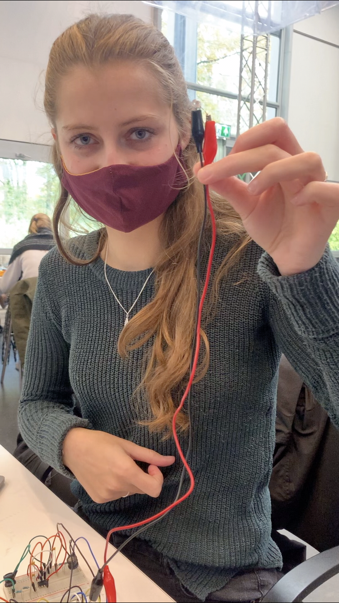
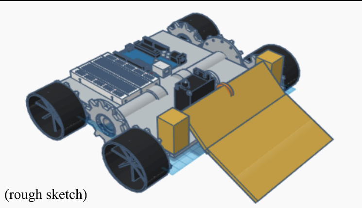
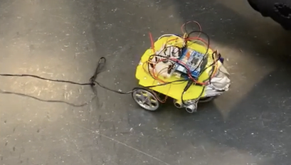
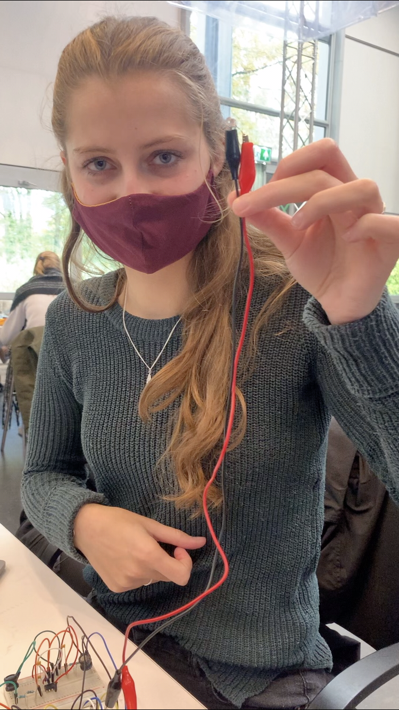
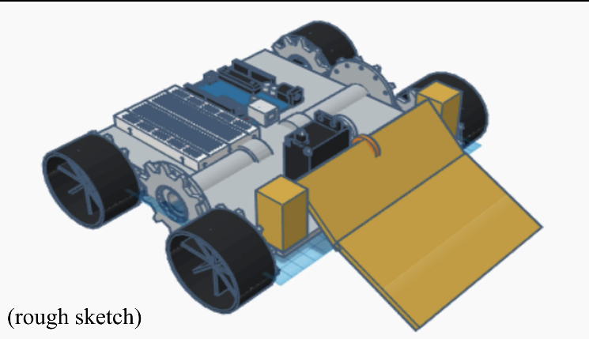
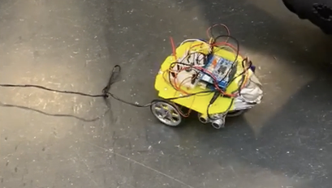

Portfolio Module 5
- Home
- Portfolio
Module project
Engineering
In module 5 of creative technology, students can choose between two tracks: Smart Technology or Interactive Media. I have chosen to take the path of interactive media, which includes courses such as ‘systems and control’, ’sensors’ and mathematics. In the module project, the goal was to put together everything we had learned over the past few weeks in the different courses. The goal was to build a robot that could avoid an obstacle.
The robot had to go trough a maze and detect a beacon of 40kHz infrared light. The obstacle had to make sure other robots would not get to the end. To make this, several sensors and detection methods could be used that had been taught throughout the module.
In our robot the following sensors were used: ultrasonic distance sensors, a photodiode, and a binary optical reflection sensor. For detecting the right path, we used the 'dijkstra-algorithm'. To detect the beacon, several filters and operational amplifier circuits were applied to detect the 40kHz beacon. To be able to control the robot precisely, PID control was used.
 





- Date: October 2020
- Purpose: Module project
- Category: Engineering
Literature Research
Research

Wearable technology (WT) becomes nowadays more prominent in the form of sensors and data collection. While WT is becoming a ubiquitous part of our life, it is not really well known and popular yet. Our literature research aims to find out what the current status of WT is on the marked and why it is not popular yet, what boundaries are for people to (not) connect with it and finally if WT is actually significantly helping during activities. Nine studies out of fifty-two are chosen from two databases, between 2009 and 2020, using the extraction procedure with PRISMA guidelines. Findings of the research are that WT is not focusing on the correct development aspect, namely on the hardware improvements instead of the social normalization (1). WT has shown significant positive results but is not widely used due to lack of consistent information in privacy, reliability and effectiveness (2). Further research can be using WT as motivation (1) and finding solutions for discovered boundaries (2).
The full literature research can be handed to you by request.
- Date: October 2020
- Purpose: The course 'Literature Reserach Project'
- Category: Research
Module Overview
Sensors and Control
In the module 'Smart Technology', module 5 of the bachelor program Creative Technology, the folling courses are offered:
- Electronics and circuits
In electronics and circuits, sereval electronic components and circuits are being taught. I have gained knowledge about signals in time and frequency domain, resistors, capacitors and inductors, complex impedances, diodes, LEDs, and transistors, transistors as amplifiers, first order filters, second order filters, opamps and stepresponses in the second order domain.
- Modeling and control
In modeling and control, I have gained knowledge about systems and how to control them. Diagrams and models were created, such as modeling transducers, simplification, feedback control, dynamical systems and discrete-time control.
- Sensors
In this course, I have gained knowledge about various sensors and how to implement them. Topics were: acquisition, capacitive sensing, resistive sensing, optical sensing, transducers, magnetic sensing and acoustic sensing.
- Systems and Signals
In this course I have gained knowledge about mathematical signals, complex numbers, second order linear ODEs, LTI systems, laplace transforms and transfer functions.


- Date: September/October 2020
- Purpose: Courses Smart Technology
- Category: Electronics